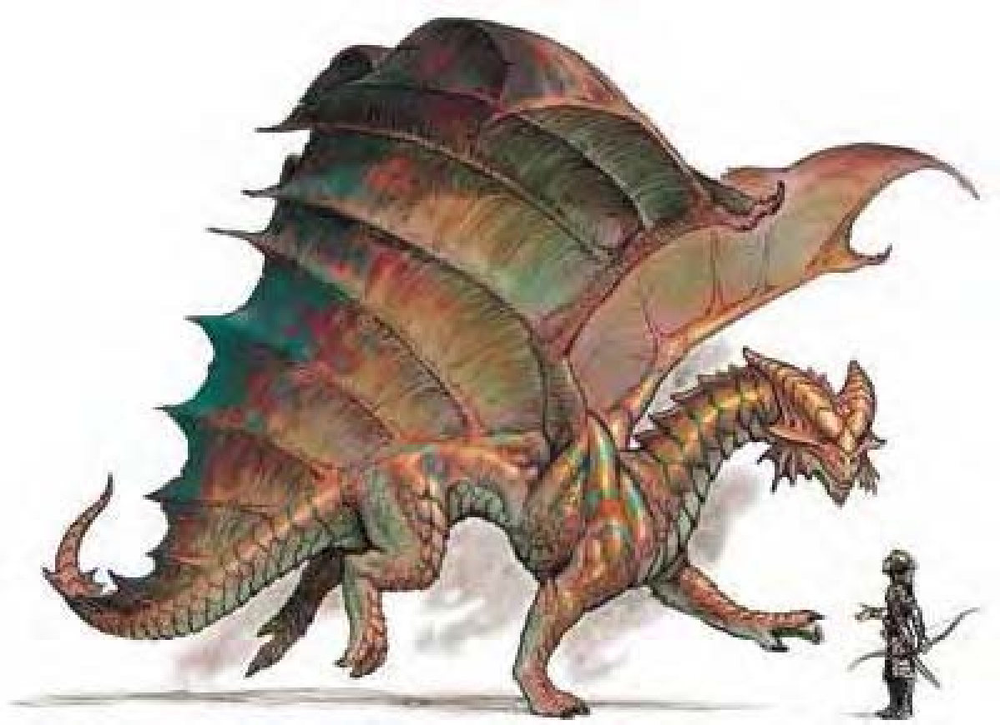

粗壮的大腿和肩膀，短而宽的额头，一节一节、扁平的长角从额头向后延伸。脸颊的脊骨向后倾斜，下颚后方的皱褶则微向前倾，下巴长有一层一层的三角状板骨。带有强烈酸味，红色鳞片闪耀金属光泽。
赤铜龙无可救药地爱恶作剧、讲笑话、说谜语。大多数本性善良，但是也有点贪婪或吝啬。善于跳跃和攀爬。赤铜龙刚出生时的鳞片为带金属光泽的红棕色。随着年龄增长，鳞片会变的更细致，颜色更趋于铜色。青年龙的鳞片会发出柔和而暖和的光泽，极老龙的鳞片会带有绿色。瞳孔会随年龄渐渐变淡，太古龙的眼睛就像是发光的绿松石球。
赤铜龙喜欢住在干燥、由岩石形成的高地或山丘顶。巢穴建在狭长的洞穴，将出入口用“地动术”或“塑石术”掩盖起来。赤铜龙在巢穴内建造弯曲的迷宫，顶端留有开口，让赤铜龙可以飞到或跳到入侵者身上。
赤铜龙是坚毅的猎人，认为充足的运动至少和食物一样重要。赤铜龙什么都吃，包括金属矿石，但是最爱吃的是变种蝎和有毒生物（他们认为毒液会提高智力）。由于通常栖息在红龙视线所及之处，两者之间的冲突是无法避免的。体型较小的赤铜龙会暂避其锋，直到可以与红龙匹敌为止。
赤铜龙的环境与社群环境：热暖带丘陵。
组织：雏龙、幼龙、少年龙、青少年龙和青年龙：单独或数尾 (2-5)；成年龙、壮年龙、老年龙、极老龙、古龙、上古龙或太古龙：单独、成双或一家 (1-2，加上2-5个后代)。
挑战级数：雏龙3、幼龙5、少年龙7、青少年龙9、青年龙11、成年龙14、壮年龙16、老年龙19、极老龙20、古龙22、上古龙23、太古龙25。
宝藏：三倍标准。
阵营：总是混乱善良。
进化：雏龙6-7HD；幼龙9-10HD；少年龙12-13HD；青少年龙15-16HD；青年龙18-19HD；成年龙21-22HD；壮年龙24-25HD；老年龙27-28HD；极老龙30-31HD；古龙33-34HD；上古龙36-37HD；太古龙39+ HD。
等级修正值：雏龙+2；幼龙+3；少年龙+4；青少年龙+4；其余无。
| 资料栏位 | 少年赤铜龙 (Young Copper Dragon) 中型龙 (土系) |
| 生命骰 | 11d12+22 (93HP) |
| 先攻 | +0 |
| 速度 | 40英尺 (8格)、飞行150英尺 (不良) |
| 防御等级 | 20 (+10天生)、接触10、措手不及20 |
| 基本攻击/擒抱 | +11 / +13 |
| 攻击 | 啮咬+13近战 (1d8+2) |
| 全力攻击 | 啮咬+13近战 (1d8+2) 及 2爪抓+11近战 (1d6+1) 及 2翼击+11近战 (1d4+1) |
| 占据/触及 | 5英尺 / 5英尺 |
| 特殊攻击 | 喷吐攻击、法术 |
| 特殊能力 | 黑暗视觉120英尺、对强酸/“睡眠术”/麻痹免疫、昏暗视觉、蛛行 |
| 豁免 | 强韧+9、反射+7、意志+9 |
| 属性 | 力量15、敏捷10、体质15、智力14、感知15、魅力14 |
| 技能与专长 | 唬骗+10、专注+13、交涉+6、威吓+4、跳跃+17、地理知识+10、自然知识+9、聆听+13、表演(演说)+11、搜索+13、察言观色+13、法术辨识+13、侦察+13、使用魔法装置+14 专长：寓守于攻、盘旋、多重攻击、翻转 |
| 环境/阵营/CR | 热暖带丘陵 / 总是混乱善良 / 挑战级数：7 |
赤铜龙欣赏智者，通常不会伤害那些可以会讲他们从来没听过的笑话、幽默故事或谜语的生物。但是对于不懂得欣赏赤铜龙笑话或幽默感不够的对象，他们很容易感到恼怒。赤铜龙喜欢嘲弄或骚扰对手，让对方放弃或做出愚蠢的行为。
生气的赤铜龙会施展“化石为泥”将敌人困住，然后把受困的对手推入泥中或是带到空中。对于会飞的敌人，他们会试着将其引入狭窄的岩谷，在那里赤铜龙可以使用蛛行能力，诱使对手撞上岩壁。
喷吐攻击 (超自然)：赤铜龙有两种喷吐攻击，射出直线状强酸或是锥状“缓慢术”气体。在锥状范围内的生物必须进行强韧检定，失败就被迟缓1d6轮，每一年龄层再加一轮。
以少年龙为例：60英尺直线，6d4点强酸伤害，通过反射检定 (DC=17) 则伤害减半；或30英尺锥状，“缓慢术”1d6+3轮，通过强韧检定 (DC=17) 则无效。
蛛行 (特异)：赤铜龙可以攀爬岩面，效果如同“蛛行术”。
类法术能力：每天2次――“塑石术” (成年龙或更老的龙)；每天1次――“化石为泥 / 化泥为石” (古龙或更老的龙)、“石墙术” (古龙或更老的龙)、“地动术” (太古龙)。
技能：“唬骗”、“躲藏”和“跳跃”为赤铜龙的本职技能。
法术：视同一级术士。一般已知术士法术 (5/4；豁免检定DC=12+法术等级)：
零级――“舞光术”、“晕眩术”、“侦测魔法”、“幻音术”；
一级――“命令术”、“油腻术”。
| 年龄层 | 体型 | 生命骰 (HP) | 力 | 敏 | 体 | 智 | 感 | 魅 | 基本攻击 / 擒抱 | 基本攻击 | 强韧 | 反射 | 意志 | 喷吐攻击 (DC) | 威势DC |
|---|---|---|---|---|---|---|---|---|---|---|---|---|---|---|---|
| 雏龙 | 微 | 5d12+5 (37) | 11 | 10 | 13 | 12 | 13 | 12 | +5 / -3 | +7 | +5 | +4 | +5 | 2d4 (13) | ― |
| 幼龙 | 小 | 8d12+8 (60) | 13 | 10 | 13 | 12 | 13 | 12 | +8 / +5 | +10 | +7 | +6 | +7 | 4d4 (15) | ― |
| 少年龙 | 中 | 11d12+22 (93) | 15 | 10 | 15 | 14 | 15 | 14 | +11 / +13 | +13 | +9 | +7 | +9 | 6d4 (17) | ― |
| 青少年龙 | 中 | 14d12+28 (119) | 17 | 10 | 15 | 14 | 15 | 14 | +14 / +17 | +17 | +11 | +9 | +11 | 8d4 (19) | ― |
| 青年龙 | 大 | 17d12+51 (161) | 19 | 10 | 17 | 16 | 17 | 16 | +17 / +25 | +20 | +13 | +10 | +13 | 10d4 (21) | 21 |
| 成年龙 | 大 | 20d12+80 (210) | 23 | 10 | 19 | 16 | 17 | 16 | +20 / +30 | +25 | +16 | +12 | +15 | 12d4 (24) | 23 |
| 壮年龙 | 超大 | 23d12+115 (264) | 27 | 10 | 21 | 18 | 19 | 18 | +23 / +39 | +29 | +18 | +13 | +17 | 14d4 (26) | 25 |
| 老年龙 | 超大 | 26d12+130 (299) | 29 | 10 | 21 | 18 | 19 | 18 | +26 / +43 | +33 | +20 | +15 | +19 | 16d4 (28) | 27 |
| 极老龙 | 超大 | 29d12+174 (362) | 31 | 10 | 23 | 20 | 21 | 20 | +29 / +47 | +37 | +22 | +16 | +21 | 18d4 (30) | 29 |
| 古龙 | 超大 | 32d12+192 (400) | 33 | 10 | 23 | 20 | 21 | 20 | +32 / +51 | +41 | +24 | +18 | +23 | 20d4 (32) | 31 |
| 上古龙 | 巨 | 35d12+245 (472) | 35 | 10 | 25 | 22 | 23 | 22 | +35 / +59 | +43 | +26 | +19 | +25 | 22d4 (34) | 33 |
| 太古龙 | 巨 | 38d12+304 (551) | 37 | 10 | 27 | 22 | 23 | 22 | +38 / +63 | +47 | +29 | +21 | +27 | 24d4 (37) | 35 |
| 年龄层 | 速度 | 先攻权 | 防御等级 | 特殊能力 | 施法者等级 | SR |
|---|---|---|---|---|---|---|
| 雏龙 | 40英尺、飞行100英尺 (普通) | +0 | 16 (+2体型、+4天生)、接触12、措手不及16 | 对强酸免疫、蛛行 | ― | ― |
| 幼龙 | 40英尺、飞行100英尺 (普通) | +0 | 18 (+1体型、+7天生)、接触11、措手不及18 | 对强酸免疫、蛛行 | ― | ― |
| 少年龙 | 40英尺、飞行150英尺 (不良) | +0 | 20 (+10天生)、接触10、措手不及20 | 蛛行 | 1级 | ― |
| 青少年龙 | 40英尺、飞行150英尺 (不良) | +0 | 23 (+13天生)、接触10、措手不及23 | 蛛行 | 3级 | ― |
| 青年龙 | 40英尺、飞行150英尺 (不良) | +0 | 25 (-1体型、+16天生)、接触9、措手不及25 | 伤害减免5 / 魔法 | 5级 | 19 |
| 成年龙 | 40英尺、飞行150英尺 (不良) | +0 | 28 (-1体型、+19天生)、接触9、措手不及28 | “塑石术” | 7级 | 21 |
| 壮年龙 | 40英尺、飞行150英尺 (不良) | +0 | 30 (-2体型、+22天生)、接触8、措手不及30 | 伤害减免10 / 魔法 | 9级 | 23 |
| 老年龙 | 40英尺、飞行150英尺 (不良) | +0 | 33 (-2体型、+25天生)、接触8、措手不及33 | “化石为泥 / 化泥为石” | 11级 | 25 |
| 极老龙 | 40英尺、飞行150英尺 (不良) | +0 | 36 (-2体型、+28天生)、接触8、措手不及36 | 伤害减免15 / 魔法 | 13级 | 26 |
| 古龙 | 40英尺、飞行150英尺 (不良) | +0 | 39 (-2体型、+31天生)、接触8、措手不及39 | “石墙术” | 15级 | 28 |
| 上古龙 | 40英尺、飞行200英尺 (笨拙) | +0 | 40 (-4体型、+34天生)、接触6、措手不及40 | 伤害减免20 / 魔法 | 17级 | 29 |
| 太古龙 | 40英尺、飞行200英尺 (笨拙) | +0 | 43 (-4体型、+37天生)、接触6、措手不及43 | “地动术” | 19级 | 31 |
* 亦可施展牧师法术及混乱、邪恶与火领域的法术，均视为秘法术。